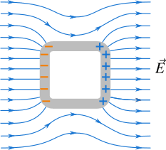

Electrostatic shielding is the phenomenon where a conductor completely protects its interior from external electric fields. This fundamental principle has numerous practical applications in electronics, communications, and safety systems.
What is Electrostatic Shielding?
Definition
Electrostatic shielding occurs when a conductor completely blocks external electric fields from reaching its interior. The conductor acts as a barrier that prevents electric field penetration.
When an external electric field encounters a conductor, the free electrons in the conductor redistribute themselves to create an internal electric field that exactly cancels the external field inside the conductor.

A conductor shields its interior from external electric fields.
The Faraday Cage Effect
Key Principle
Inside any conductor (solid or hollow), the electric field is zero:
$$\vec{E}_{\text{inside}} = 0$$
However, the electric potential inside is constant (but not necessarily zero):
$$V_{\text{inside}} = \text{constant}$$
Equipotential Surfaces
Conductors create equipotential surfaces - surfaces where the electric potential is constant. In electrostatic equilibrium:
Conductor surface: The entire surface of a conductor is an equipotential surface
Interior: The entire interior of a conductor is at the same potential as its surface
Field direction: Electric field lines are always perpendicular to equipotential surfaces
Work done: No work is done moving a charge along an equipotential surface
Equipotential Surface Properties
For any equipotential surface:
Potential difference: \(\Delta V = 0\) between any two points on the surface
Electric field: \(\vec{E} \cdot \vec{ds} = 0\) (field is perpendicular to surface)
Work: \(W = q\Delta V = 0\) for movement along the surface
A Faraday cage is a hollow conductor that provides complete electrostatic shielding, but the same shielding effect occurs in solid conductors as well. The name comes from Michael Faraday, who first demonstrated this effect in 1836.
How Faraday Cages Work
External field: An electric field approaches the conductor
Charge redistribution: Free electrons move to create an opposing field
Field cancellation: The induced field cancels the external field inside
Complete shielding: No electric field penetrates the interior
The Faraday cage effect provides complete electrostatic shielding.
Properties of Electrostatic Shielding
Fundamental Properties
Complete protection: Zero electric field inside the shielded region
Constant potential: Electric potential is constant throughout the shielded region
Independent of field strength: Works for any external field magnitude
Instantaneous: Shielding occurs as soon as equilibrium is reached
One-way protection: External fields can't get in, but internal fields can get out
Material dependent: Only works with good conductors
Types of Electrostatic Shielding
Solid Conductor Shielding
A solid conductor provides complete shielding for any region inside it:
Advantages: Complete protection, simple construction
Problem: A hollow conducting sphere of radius 10 cm is placed in a uniform electric field of 1000 N/C. What is the electric field inside the sphere?
Solution Steps:
Given: E_external = 1000 N/C, r = 10 cm
Principle: Faraday cage effect
Result: E_inside = 0 N/C
Answer: The electric field inside the hollow sphere is zero (E = 0 N/C).
Example 2: Charge Distribution on Shielding Conductor
Problem: A hollow conducting sphere of radius 5.0 cm is placed in a uniform electric field. If the sphere develops a surface charge density of +2.0 × 10⁻⁶ C/m² on one side, what is the electric field just outside that point?
Answer: The electric field just outside the sphere is 2.26 × 10⁵ N/C, directed away from the surface.
Example 3: Shielding Effectiveness
Problem: A metal box with 1.0 mm thick walls is used to shield sensitive electronics. If the external electric field is 5000 N/C, what is the electric field inside the box?
Solution Steps:
Given: E_external = 5000 N/C, wall thickness = 1.0 mm
Principle: Complete electrostatic shielding
Result: E_inside = 0 N/C
Answer: The electric field inside the metal box is zero (E = 0 N/C), regardless of the external field strength.
Applications of Electrostatic Shielding
Electronics and Communications
Electronic enclosures: Protecting sensitive circuits from external interference
Cable shielding: Coaxial cables use conductive shields to prevent signal interference
RF shielding: Preventing radio frequency interference in electronic devices
EMC testing: Shielding chambers for electromagnetic compatibility testing
Medical and Scientific
MRI rooms: Shielding to prevent external RF interference
Aircraft protection: Shielding against lightning strikes
Shielding Effectiveness
Shielding Effectiveness
The effectiveness of electrostatic shielding depends on:
Conductor thickness: Thicker conductors provide better shielding
Conductivity: Higher conductivity materials are more effective
Frequency: Shielding effectiveness varies with field frequency
Apertures: Holes or gaps reduce shielding effectiveness
Factors Affecting Shielding
Several factors influence the effectiveness of electrostatic shielding:
Material properties: Higher conductivity provides better shielding
Geometry: Shape and size affect shielding effectiveness
Thickness: Thicker materials provide better protection
Gaps and holes: Any openings reduce shielding effectiveness
Grounding: Proper grounding enhances shielding
Common Mistakes to Avoid
⚠️ Common Errors
Thinking shielding is partial: Electrostatic shielding is complete when properly implemented
Ignoring grounding: Proper grounding is essential for effective shielding
Forgetting about gaps: Any holes or gaps reduce shielding effectiveness
Confusing with magnetic shielding: Electrostatic and magnetic shielding are different phenomena
Using insulators: Only conductors provide electrostatic shielding
Practice Problems
Practice Problem 1
Problem: A hollow conducting cylinder is placed in a uniform electric field of 2000 N/C. What is the electric field inside the cylinder?
Click for solution
Solution:
Principle: Faraday cage effect
Result: E_inside = 0 N/C
Answer: The electric field inside the cylinder is zero (E = 0 N/C).
Practice Problem 2
Problem: A metal box with 2.0 mm thick walls has a surface charge density of +1.5 × 10⁻⁶ C/m² on its outer surface. What is the electric field just outside the box?